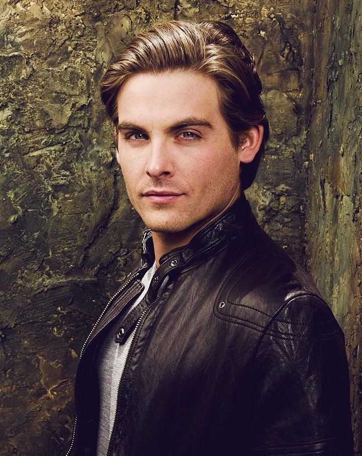
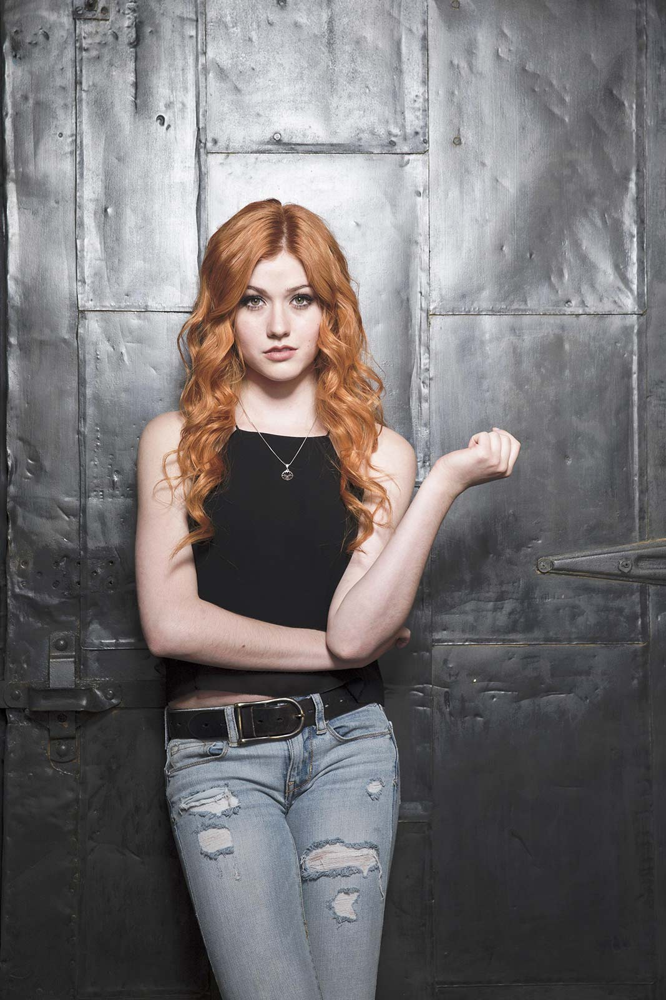

CAZADORES DE SOMBRAS HA TENIDO 2 ADAPTACIONES
Cazadores de Sombras: Ciudad de Hueso
Adaptación cinematográfica
En Pandemónium, la discoteca de moda de Nueva York, Clary sigue a un joven de pelo azul hasta que presencia su muerte a manos de tres jóvenes cubiertos de extraños tatuajes. El muerto resulta ser un demonio y los tres jóvenes -los hermanos Alec e Izzy Lightwood y Jace Wayland- son cazadores de sombras, guerreros dedicados a liberar a la tierra de aquellos seres malvados y místicos que quieren apoderarse del mundo. Desde esa noche, el destino de Clary se une al de los cazadores de sombras; sobre todo al de Jace: un chico guapo con aspecto de ángel, pero con actitud de demonio y tendencia de mundano, a causa de siempre actuar como si nada le importara más que él mismo.
Cazadores de Sombras: Instrumentos Mortales
Adaptación, serie de Netflix
El día de su cumpleaños, Clary Fray decide visitar un club nocturno junto a su mejor amigo, Simon Lewis; en este, es testigo de cómo un grupo de jóvenes asesinan a alguien. Ella descubre que ellos son cazadores de sombras, seres mitad ángeles y mitad humanos que protegen al mundo cazando demonios, y que ella y su madre también lo son. Al volver a casa, su madre es secuestrada y Clary acude a Jace Wayland, otro cazador de sombras, para encontrarla. Con el paso del tiempo, Clary comienza a conocer el mundo de los cazadores de sombras, entrena para desarrollar sus habilidades y al mismo tiempo descubre los secretos que su madre le ha estado guardando en un mundo lleno de licántropos, vampiros, hadas, demonios, brujos y otras criaturas.
Actores de las Adaptaciones
Cazadores de Sombras: Ciudad de Hueso
Lily Collins as Clary Fairchild
James Campbell Bower as Jace Wayland
Jemima West as Isabelle Lightwood

Robert Sheehan as Simon Lewis
Kevin Zegers as Alec Lightwood
Cazadores de Sombras: Instrumentos Mortales
Katherine Mcnamara as Clary Fairchild
Dominic Sherwood as Jace Wayland
Emeraude Toubia as Isabelle Lightwood
Matthew Daddario as Alec Lightwood